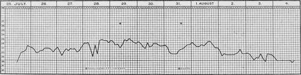

Typhoid Pernicious Malaria. Part 2
Description
This section is from the book "Malaria, Influenza And Dengue", by Julius Mennaberg and O. Leichtenstern. Also available from Amazon: Malaria, influenza and dengue.
Typhoid Pernicious Malaria. Part 2
The fever curve of a subcontinued for one or two weeks will sometimes show the original type,-whether tertian or quotidian,- though in a majority of cases this is not decisive. In addition to the spontaneous temperature fluctuations, which are difficult to recognize, there are others due to the quinin (administered necessarily from the beginning), and this may alter the curve in such a way that it is impossible to come to any conclusion.
The fever may end by crisis or by lysis. It is not rare to see a subcontinued under the influence of quinin give way to an intermittent, and after severalv paroxysms, cease. Hyperpyretic temperatures-over 42°-are occasionally observed, but they are not at all characteristic of pernicious typhoid.
Subnormal temperatures are sometimes seen during the intermission. Several days of subnormal temperature sometimes follow one another, during which time the symptoms not only do not improve, but, if possible, become worse. Under these circumstances we speak of an adynamic form.
Fig. 36.-Typhoid pernicious fever (after Thayer and Hewetson).
The pulse, as a rule, corresponds to the temperature: it is often dicrotic and of low tension. In severe cases, especially in the adynamic forms, the pulse becomes thready and its tension is reduced to a minimum. This may occur even during the period of apyrexia. Arhythmia is likewise occasionally observed.
The respirations are hastened, sometimes dyspneic.
The gastro intestinal tract is often the seat of conspicuous symptoms. From the beginning there is usually anorexia. This is often unconquerable, and the patients can be persuaded to take no form of nourishment. In other cases there exists a so called false appetite: the patient orders this or that food with the thought that he will eat it with a relish, yet it is scarcely set before him when it nauseates him (Werner).
Vomiting frequently sets in, the material being at first yellowish and later tinged with blood.
The epigastrium is frequently distended, spontaneously painful, and sensitive to pressure.
The abdomen is meteoristic, tense, and occasionally very painful; rumbling is not uncommon in the ileocecal region. Roseola is extremely rare.
Diarrhea is frequent; constipation sometimes occurs. This depends on the locality and the "genius epidemicus." When fluid evacuations occur,-and these may number eight to ten in the course of twenty four hours,-they are usually characterized by a striking dark color, due probably to an excessive amount of urobilin. Kelsch and Kiener observed stools that consisted almost entirely of bile.
After the disease has lasted a few days, the spleen is almost always enlarged, though when meteor ism exists, it may be difficult or even impossible to locate. The spleen is spontaneously painful and sensitive to pressure. Enlargement and sensitiveness of the liver are not infrequent.
In the lungs catarrhal symptoms are common. According to Baccelli, the rales are found not like in typhoid, over the posterior inferior parts, but irregularly localized. According to the same writer, these catarrhal symptoms may disappear unexpectedly, to recur in the same way.
Dyspnea is frequent and may sometimes be marked. A dry cough is likewise common. Not rarely the patient is tormented with a singultus that may continue several days and cease suddenly without known reason. The singultus may also intermit with the paroxysms. Epistaxis for one or more consecutive days is not infrequent.
The urine is usually concentrated, rich in urobilin, and contains frequently albumin, and not rarely, even though it is only transitory, small amounts of hemoglobin in solution (Kelsch and Kiener). The blood shows the signs of anemia and melanemia, often to a marked degree.
In all stages of the disease small ameboid parasites are usually found in the blood. They are sometimes non pigmented, but again contain a few dust like pigment granules, or, when more advanced, a large dark pigment clump. The infected corpuscles are sometimes shrunken, making the so called brassy corpuscles. Sporulation forms are rare in the blood from the finger. The parasites are in the same stage of development, showing that they belong to one generation only in cases with intermittent fever. Examining such cases before the paroxysm, we see a relatively large number of pigmented parasites; at the height of the paroxysm, only the young, very small, ameboid organisms.
In the majority of cases, especially in those with subcontinued fever, we find all possible stages of development, so that it is impossible to speak of generations. Maturation and sporulation are continually occurring. The battle, which in the intermittent fevers is limited to a certain period, continues here without cessation, while the enemy continues to throw new forces in the form of spores into the field.
If the disease has existed some days, or if we have to do with a relapse, crescents or spheric organisms of that class are always present. The latter are frequently flagellate. Melaniferous leukocytes are frequent in all stages of the disease.
At the termination of the disease the ameboid forms disappear or at least diminish in number, while the crescents remain for a long time. It sometimes happens that the parasites disappear, at least from the peripheral blood, and yet the symptoms continue to progress (Marchiafava arid Bignami).
The duration of typhoid pernicious is variable. It may be three to four days or two to three weeks. It is usually influenced by rational therapy, and since the introduction of the "divine bark" (gottlichen Rinde), the cases of short duration are by far the most frequent. Yet even to day, in spite of quinin, long lasting and fatal cases occur.
The course may be spontaneously favorable, yet it would be a serious error to build on this possibility and forego the specific therapy.
According to Kelsch and Kiener, the mortality in typhoid pernicious is 10 per cent.; in the adynamic variety (see below), 25 per cent. Werner gives the mortality for the first form as 0, for the latter, 6 per cent. How much of this striking statistical difference is to be reckoned to the difference in the local "genius epidemicus" in Algeria and Russia, how much to the difference in the classification of the cases, cannot be estimated.
Continue to:
Tags
mosquito, malaria, influenza, dengue, symptoms, outbreaks, diseases, hemoglobinuria, infections